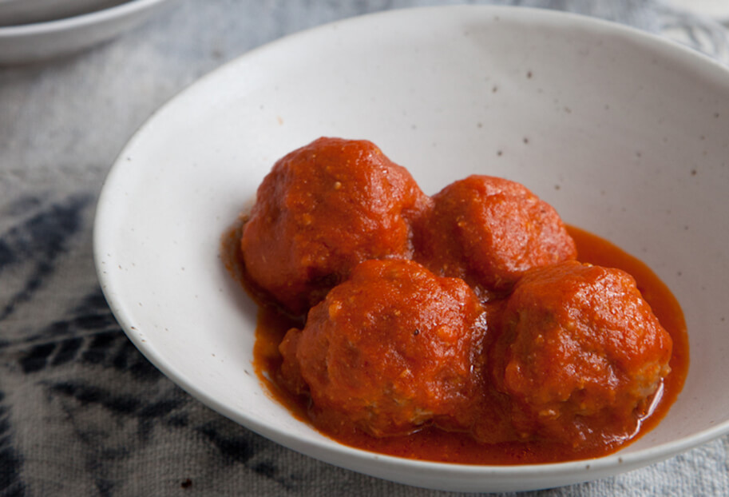

En un molde grande, combina la carne molida con los huevos, el ajo picado, el pan molido, 1/2 cucharadita de sal y 1/4 de cucharadita de pimienta negra molida. Mezcla bien con las manos o con una espátula. Pon los tomates en una olla con suficiente agua y hierve a fuego medio-alto de 8 a 10 minutos, hasta que estén bien cocidos y blandos. Licúa bien los tomates cocidos con un 1/4 de taza del agua de cocción, los 2 dientes de ajo, la cebolla, el adobo de los chiles chipotle y si lo deseas, un chile chipotle sin semillas. Calienta el aceite en una olla grande a fuego medio-alto. Una vez caliente, vierte la salsa de tomate. Es normal que salpique, no te preocupes. Deja hervir, con la tapa sobrepuesta, de 6 a 8 minutos, o hasta que cambie a un color más oscuro, se espese y no tenga sabor a crudo. Añade el caldo de pollo y sal al gusto y baja el fuego a medio-bajo. Pon un recipiente pequeño con agua al lado de la olla con la salsa de tomate. Mójate las manos y haz las albóndigas, una por una, de 4 a 5 cm de diámetro. Pon las albóndigas con cuidado en la salsa de tomate. Una vez que hayas hecho todas las albóndigas y ya estén en la salsa, añade las ramitas de cilantro y deja hervir a fuego medio-bajo durante 25-30 minutos. Sirve las albóndigas calientes con rebanadas de aguacate mexicano, tortillas calientitas y si tienes antojo, frijoles de la olla o arroz blanco con plátanos fritos.